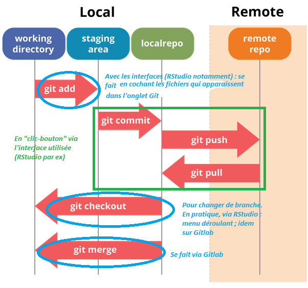
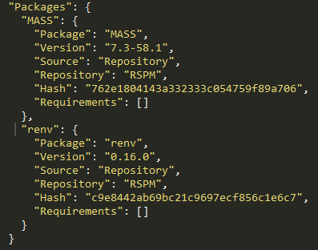

Bonnes pratiques pour les projets statistiques
Une formation aux bonnes pratiques avec Git et R
Introduction
- Version courte de la formation aux bonnes pratiques avec
RetGit

Retour à la page d’accueil pour explorer les autres versions
Introduction
La notion de bonnes pratiques
- Origine : communauté des développeurs logiciels
- Constats :
- le “code est plus souvent lu qu’écrit” (Guido Van Rossum)
- la maintenance d’un code est très coûteuse
- Conséquence : un ensemble de règles informelles, conventionnellement acceptées comme produisant des logiciels fiables, évolutifs et maintenables
Pourquoi s’intéresser aux bonnes pratiques ?
L’activité du statisticien / datascientist tend à se rapprocher de celle du développeur :
- projets intenses en code
- projets collaboratifs et de grande envergure
- complexification des données et donc des infrastructures
- déploiement d’applications pour valoriser les analyses
Bonnes pratiques et reproductibilité

Source : Peng R., Reproducible Research in Computational Science, Science (2011)
- Une reproductibilité parfaite est coûteuse
Gitest un standard atteignable et efficient
Partie 1 : contrôle de version avec Git
Plan de la partie
1️⃣ Le contrôle de version : pourquoi faire ?
2️⃣ Le contrôle de version avec Git
I- Le contrôle de version : pourquoi faire ?
1️⃣ Archiver son code proprement
pour en finir avec ça :

1️⃣ Archiver son code proprement
ou encore ça :
prior <- read_csv(prior_path)
prior <- prior %>%
select(id, proba_inter, proba_build, proba_rfl) %>%
separate(id, into = c('nidt', 'grid_id'), sep = ":") %>%
group_by(nidt) %>%
mutate(
proba_build = proba_build/sum(proba_build),
proba_rfl = proba_rfl/sum(proba_rfl),
) %>%
unite(col = "id", nidt, grid_id, sep = ":")
# Test
# prior_test <- prior %>%
# mutate(
# proba_inter = round(proba_inter, 4)
# proba_build = round(proba_build, 4)
# proba_rfl = round(proba_rfl, 4)
# )
write_csv(prior_round, "~/prior.csv")1️⃣ Archiver son code proprement
Pour arriver à ça :

Source : ThinkR
2️⃣ Voyager dans le temps (de votre projet)
3️⃣ Une collaboration simplifiée et efficace
Un modèle distribué

Source : specbee.com
3️⃣ Une collaboration simplifiée et efficace
Qui permet l’expérimentation en toute sécurité - les branches :

Source : lutece.paris.fr
3️⃣ Une collaboration simplifiée et efficace
Quel que soit l’environnement de travail

3️⃣ Une collaboration simplifiée et efficace
Avec des outils pour faciliter la collaboration

4️⃣ Partager son code à un public large
Une vitrine pour les projets et l’organisation : exemple de l’espace de l’Insee sur GitHub

En résumé
- Construire et naviguer à travers l’historique de son projet
- La collaboration rendue simple et efficace
- Améliorer la reproductibilité de ses projets
- Améliorer la visibilité de ses projets
II- Le contrôle de version avec Git
⚠️ Git est complexe
L’utilisation de Git nécessite certaines notions préalables:
- Fonctionnement d’un
filesystemet Connaissance basique du terminalLinux - Potentiellement, un grand nombre de commandes
⚠️ Git est complexe
Mais
- L’usage quotidien n’implique que quelques commandes
- Lors de chaque action, Git renvoie un message qui indique s’il y a eu problème (il faut lire les messages de Git!)
- Enormément de ressources disponibles sur internet
- Des interfaces visuelles (ex:
RStudio,Sublime Merge,VS Code) qui facilitent l’apprentissage - Un petit investissement individuel pour de gros gains collectifs
Concepts
Git, GitHub, GitLab… quelles différences ?
Gitest un logiciel ;- Pensé initialement pour une utilisation en ligne de commandes
- Différentes interfaces graphiques (
RStudio,Sublime Merge,VS Code…)
Concepts
Git, GitHub, GitLab… quelles différences ?
GitHubetGitLabsont des forges logicielles- Forge: espace d’archivage de code
- Des fonctionalités supplémentaires : réseau social du code
Astuce
GitHub: utilisation pour les projets open-sourceGitLab: utilisation pour les projets internes
Concepts
Dépôt local / dépôt distant (remote)

- Par défaut, le dépôt distant porte l’alias
origin
Concepts
Workflow complet

Commentaires “maison”
Commandes essentielles
Quelques exemples en ligne de commande
| Action | Commande |
|---|---|
| Cloner un projet | git clone [url-to-git-repo] |
| Afficher le statut des changements pour Git | git status |
| Retrouver l’URL du dépôt distant | git remote -v |
Commandes essentielles
| Action | Commande |
|---|---|
Ajouter des changements à l’index de Git (stage fixes) |
Un seul fichier : git add <file-name> Tous les fichiers déjà indexés : git add -u Tous les fichiers ⚠️ : git add -A |
Warning
La méthode git add -A peut amener à suivre les modifications de fichiers qui ne devraient pas l’être (par exemple, des données).
Il est recommandé de bien réfléchir avant de l’utiliser (ou d’avoir un bon .gitignore)
Commandes essentielles
| Action | Commande |
|---|---|
Faire un commit |
git commit -m "message" |
Pousser les changements locaux vers le dépôt distant (branche master) |
git push origin master |
Récupérer les changements sur le dépôt distant (branche master) |
git pull origin master |
Modes d’authentification
- https
- simple à utiliser
- authentification username + password (ou token) à chaque push
- … sauf si on configure Git de façon à garder en mémoire les identifiants
- ssh
- (plus) complexe à initialiser mais authentification automatique
- seul type d’authentification possible sous AUS.
Voir le site documentaire datascience de l’Insee sur le sujet et les fiches utilitR.
Application 0
Préparation de l’environnement de travail
- Connectez-vous à votre compte
sur le Gitlab de l'Insee - Créer un nouveau dépôt dans le groupe
formation-git-conj/exos-individuels/. Exceptionnellement, vous pouvez utiliser votre prénom pour nommer votre dépôt. - Cloner le dépôt distant sur votre environnement local (ici, le
RStudiode votre espaceZ) :File→New project→Version Control→Git
- Ouvrir
Sublime Merge. Dans File/Open Repository, charger le Rproj.
üí° Si vous ne vous √™tes jamais authentifi√© aupr√®s du Gitlab de l‚ÄôInsee ou n‚Äôavez jamais t√©l√©charg√© Git vous aurez besoin, en amont, de configurer Git sur votre poste de travail : pour ce faire, suivre la fiche utilitR
❓ Question : qu’est ce qui différencie le projet cloné d’un projet quelconque ?
Application 1
Premiers commits
- Cr√©er un dossier üìÅ
scripts - Y créer les fichiers
script1.Retscript2.R, chacun contenant quelques commandesRde votre choix - Ajouter ces fichiers à la zone de staging de Git en les cochant dans l’interface
Sublime Mergeavec le boutonStage. - Effectuer un
commit, auquel on donnera un message descriptif pertinent - Supprimer le fichier
script1.Ret modifier le contenu du fichierscript2.R - Analyser ce qui se passe lorsque l’on coche ces fichiers dans l’interface
Sublime Merge - Effectuer un nouveau commit pour ajouter ces modifications à l’historique
- Visualiser l’historique du projet à partir de l’interface graphique de
Sublime Merge
❓ Question : à ce stade, le dépôt du projet sur GitHub (remote) a-t-il été modifié ?
Application 2
Interactions avec le dépôt distant
- Effectuer un
pushpour intégrer les changements locaux au projet distant - Parcourir l’historique du projet sur
GitLab- Faire apparaître les différences entre deux versions consécutives du projet
- Afficher une version passée du projet
Bonnes pratiques
Que versionne-t-on ?
- Essentiellement du code source
- Pas d’outputs (fichiers
.html,.pdf, modèles…) - Pas de données, d’informations locales ou sensibles
Note
Pour définir des règles qui évitent de committer tel ou tel fichier, on utilise un fichier nommé .gitignore.
Si on mélange du code et des éléments annexes (output, données…) dans un même dossier, il faut consacrer du temps à ce fichier.
Le site gitignore.io peut vous fournir des modèles.
N’hésitez pas à y ajouter des règles conservatrices (par exemple *.csv), comme cela est expliqué dans la documentation utilitR.
Bonnes pratiques
Format des commits
- Fréquence
- Aussi souvent que possible, quasi autant que ctrl+S
- Le lot de modifications doit “avoir du sens”
- Messages
- Courts et informatifs (comme un titre de mail)
- Décrire le pourquoi plutôt que le comment dans le texte

Application 3
Le fichier .gitignore
Au moment du clonage du dépôt, le fichier .gitignore, est apparu à la racine du projet. Il spécifie l’ensemble des fichiers qui seront toujours exclus de l’indexation faite par Git.
- Exclure les fichiers de type
*.pdfet*.html - Créer un dossier
dataà la racine du projet et créer à l’intérieur de celui-ci un fichierdata/raw.csvavec une ligne de données quelconque - Ajouter au
.gitignorele dossierdata/ - Vérifier que toutes les règles ajoutées précédemment fonctionnent comme attendu
❓ Question : que se passe-t-il lorsque l’on ajoute au .gitignore des fichiers qui ont déjà été commit sur le projet Git ?
III- Le travail collaboratif avec Git
Outils pour le travail collaboratif
- L’éco-système
Gitfacilite le travail collaboratifGit: modèle des branchesGitHub/GitLab: Issues, Merge Requests, Forks
- Ces outils ne remplacent pas une bonne définition de l’organisation du travail en équipe
- Choix d’un workflow (exemples : périmètre des “projets”, conventions de nommage des branches, etc.)
- Droits d’accès
- Règles de contribution
Application 4
Synchronisation des dépôts
- Se mettre par groupes de 3 personnes:
- Une personne aura la responsabilité d’être mainteneur. Me prévenir pour que je lui donne les droits de maintainer.
- Deux personnes seront développeurs
- Le mainteneur crée un dépôt sur
Gitlab. Il/Elle donne des droits au(x) développeur(s) du projet - Créer une copie locale (clone) du projet sur son
Z - Créer un fichier
<votre_nom>-<votre_prenom>.md. Écrire dedans trois phrases de son choix sans ponctuation ni majuscules, puiscommitetpushles modifications - À ce stade, une seule personne (la plus rapide) devrait ne pas avoir rencontré de rejet du
push. C’est normal ! Le premier ayant fait unpusha modifié le dépôt commun ; les autres doivent intégrer ces modifications dans leur version locale (pull) avant d’avoir le droit de proposer un changement.
Divergence d’historiques : cas simple

- Avec un
pull,Gitrésout le problème via un fast-forward mergeGitcrée un commit de merge de l’historique distant dans le local- Nota bene : rend l’historique non linéaire
Divergence d’historiques : cas compliqué
Gitne peut pas résoudre de lui même la divergence
- L’utilisateur doit résoudre le conflit
Résoudre les conflits : l’interface RStudio
- Choisir la version à conserver
- Supprimer les “marquages” du conflit
Commitetpushles changements
Résoudre les conflits : l’interface Sublime Merge
OURS(à gauche) =MAINou ce qui est sur le repo
THEIRS(à droite) =BRANCHEou ce qui est en local
- Au milieu la version qui sera gitée avec les conflits à arbitrer
- Choisir la flèche de gauche pour conserver
OURS/ celle de droite pourTHEIRS
Commitetpushles changements
Application 5
Résoudre les conflits
- On se place dans la même configuration que dans l’application précédente : un mainteneur et deux développeurs
- Le mainteneur modifie le contenu de son fichier, puis
commitetpushles modifications - Sans faire de
pullpréalable, les développeurs modifient également le contenu du fichier du [mainteneur], puiscommitetpushles modifications - Le
pushest rejeté pour la même raison que dans l’application précédente : les dépôts ne sont plus synchronisés, il fautpullles changements distants au préalable. Mais cette fois, lepullest également rejeté : il y a un conflit entre l’historique du projet distant et celui du projet local.Gitnous indique qu’il faut résoudre le conflit avant de pouvoir modifier l’historique du projet. - Utiliser l’interface de
RStudioou deSublime Mergepour résoudre le conflit, en choisissant la version du fichier que vous souhaitez conserver, puiscommit/pushles modifications - Comme dans l’application précédente, seul le développeur le plus rapide parvient à
push. Les autres doivent répéter l’opération.
❓ Question : comment limiter au maximum la survenue des conflits d’historique ?
Le modèle des branches

Le modèle des branches
Application 6
Branches, issues et merge requests
- Sur
GitLab, chaque personne ouvre uneIssuesur le même dépôt que les applications précédentes, dans laquelle vous suggérez une modification à apporter à votre projet - Via
Rstudio, créer une branche dont le nom indique la modification que vous allez apporter. ➡️ utiliser l’icône violette dans l’ongletGit, sur la droite. ⚠️ : être attentif à la branche depuis laquelle vous créez votre nouvelle branche. - Vérifier que vous êtes bien positionné sur la nouvelle branche. Effectuer un
commitavec les modifications de votre choix, puis pousser les changements. - Ouvrir une
Merge Request(MR) pour proposer d’intégrer vos changements sur la branche principale du dépôt distant. - Chaque personne effectue finalement une review d’une
MRd’un autre membre de l’équipe, suite à quoi les différentesMRpeuvent être fusionnées
❓ Question : quelle organisation pour merge dans la branche principale ?
Ressources supplémentaires
- Pour aller plus loin:
- Formation Travail collaboratif avec
R - La documentation
utilitRpropose plusieurs chapitres surGit - La Bible de l’usage de
Git
- Formation Travail collaboratif avec
- Trouver de l’aide:
- Pour toute question : le salon Tchap Insee-Git-Gitlab (üí° utilisez Tchap via l‚Äôinterface Element, dispo sur le centre logiciel !)
- A l’Insee : la documentation utilisateurs pour l’utilisation de
GitsurAUS - Sollicitez vos collègues utilisateurs de
Git!
Partie 2 : bonnes pratiques avec R
Plan de la partie
Améliorations graduelles dans l’échelle de la reproductibilité :
1️⃣ Qualité du code
2️⃣ Structure des projets
3️⃣ Formats de données
Application 0
Préparation de l’environnement de travail
- Créer un nouveau dépôt public sur GitLab, dans le groupe de la formation, sous-groupe “exos-individuels”
- Cloner le dépôt distant sur votre environnement local (ici, le
RStudiode votreZ):File→New project→Version Control→Git
- Créer un script
get_data.Ren copiant le contenu de ce fichier, puis l’exécuter - Créer le script
script.Rdans votre dépôt en copiant le contenu de ce fichier - Ajouter la règle “individu_reg.*” au fichier
.gitignore. Que signifie-t-elle ? - Commit/push les changements
I- Qualité du code
Enjeux
- D’une vision utilitariste du code à une vision du code comme outil de communication
- Favoriser la lisibilité et la maintenabilité
- Faciliter la réutilisation
- Assurer la transparence méthodologique
Principes généraux
- Adopter les standards communautaires
- Utiliser des fonctions
- Documenter son code
- Indiquer les packages utilisés afin d’éviter les conflits
1️⃣ Adopter les standards communautaires
“Good coding style is like correct punctuation: you can manage without it, butitsuremakesthingseasiertoread”
- Respecter les conventions du langage dans lequel il est rédigé
- Il existe un guide de référence pour bien coder en
R: le Tidyverse style guide.
1️⃣ Adopter les standards communautaires
Deux outils pratiques aident à respecter les standards :
- linter : programme qui vérifie que le code est formellement conforme à un certain guidestyle
- signale problèmes formels, sans corriger
- formatter : programme qui reformate un code pour le rendre conforme à un certain guidestyle
- modifie directement le code
Astuce
- Exemples d’erreurs repérées par un linter :
- lignes de code trop longues ou mal indentées, parenthèses non équilibrées, noms de fonctions mal construits…
- Exemples d’erreurs non repérées par un linter :
- fonctions mal utilisées, arguments mal spécifiés, structure du code incohérente, code insuffisamment documenté…
1️⃣ Adopter les standards communautaires
Dans le cas de :
2️⃣ Utiliser des fonctions
Règle d’or
Il faut utiliser une fonction dès qu’on utilise une même portion de code plus de deux fois (don’t repeat yourself (DRY))
- Limite les risques d’erreurs liés aux copier/coller
- Rend le code plus lisible et plus compact
- Un seul endroit du code à modifier lorsqu’on souhaite modifier le traitement
- Facilite la réutilisation et la documentation du code !
Règles pour écrire des fonctions pertinentes
- Une tâche = une fonction
- Une tâche complexe = un enchaînement de fonctions réalisant chacune une tâche simple
- Limiter l’utilisation de variables globales.
2️⃣ Utiliser des fonctions
À ne pas reproduire chez vous. La fonction doit mobiliser ses paramètres et, théoriquement, rien d’autre.
2️⃣ Utiliser des fonctions
À ne pas reproduire chez vous
2️⃣ Utiliser des fonctions
À ne pas reproduire chez vous
2️⃣ Utiliser des fonctions
À ne pas reproduire chez vous
3️⃣ Documenter son code
- Grands principes :
- Documenter le pourquoi plutôt que le comment
- Privilégier l’auto-documentation via des nommages pertinents.
Comment bien documenter un script ?
- Minimum üö¶ : commentaire au d√©but du script pour d√©crire ce qu‚Äôil fait
- Bien üëç : commenter les parties ‚Äúd√©licates‚Äù du code
- Id√©al üí™ : documenter ses fonctions avec la syntaxe
roxygen2.
3️⃣ Documenter son code
Utiliser aussi “l’auto-documentation” pour les noms de répertoire !
❎ pas de répertoires avec votre prénom, votre nom ou vos initiales.
…au risque de se retrouver avec ça : Taille totale : 7 Go
4️⃣ Pas d’ambiguïté sur les packages utilisés
- Deux fonctions peuvent avoir le même nom dans des packages différents
Rutilise par défaut la librairie chargée le plus récemment
- Erreurs difficiles à repérer car il est nécessaire d’exécuter le code
- Recommandation : indiquer explicitement le package : notation
package::fonction()- Exemple :
dplyr::filter()
- Exemple :
Exemple
package1etpackage2contiennent chacun une fonction appeléesuperFonction.- Si
package2est chargé aprèspackage1, alorssuperFonctiondésigne par défaut la fonction depackage2. - Mieux vaut noter
package1::superFonctionetpackage2::superFonction
4️⃣ Pas d’ambiguïté sur les packages utilisés
Spécial conj
Dès que vos codes font appels à des fonctions des packages “maison” tels que pRev ou RConj : ajoutez le nom du package devant la fonction. Lors des montées de version des packages, vous retrouverez facilement les endroits dans vos codes qui peuvent être affectés.
Astuce RStudio
Ctrl+Maj+F : permet de chercher un terme dans l’ensemble des scripts d’un répertoire.
➡️ pour retrouver facilement les appels à un package donné.
Ressources supplémentaires
- Un cours complet sur la reproductibilité avec
R - Une présentation très complète sur le partage de code et de données avec
R - L’équivalent
Pythonen 3A d’ENSAE
Application 1
Partie 1 : vérification du bon fonctionnement du code
Un code reproductible est avant toute chose un code fonctionnel ! Repérez les erreurs qui empêchent le script script.R de s’exécuter correctement, et les corriger.
Application 1
Partie 2 : premiers standards de qualité
- Installer les packages
Rlintretstyler. - Définir le linter à utiliser comme étant de type
tidyverse:lintr::use_lintr(type = "tidyverse") - Diagnostiquer le script
script.R:lintr::lint("script.R").- Comprenez-vous la nature des problèmes détectés par le linter?
- Appliquer le formatter au
script.R:styler::style_file("script.R"). - Refaire tourner le linter. Il reste encore un certain nombre d’erreurs de formattage, car
stylerest un formatter peu intrusif. - Regarder les différents problèmes repérés par le linter, et en corriger quelques uns (un pour chaque type de problème).
Application 1
Partie 3 : une meilleure gestion des packages utilisés
- Limiter les ambiguités sur les packages en utilisant la syntaxe
package::fonctionpour les packages rarement utilisés dans le script. - L’installation des packages dans un script n’est pas une bonne pratique. Supprimer les instructions correspondantes.
- Importer le
tidyverseau complet est rarement utile. N’importer à la place que les packages effectivement utilisés dans le script.
Application 1
Partie 4 : (auto-)documentation du code
- Déplacer les
librarypour les mettre tous ensemble au début du script. - Le script n’est pas construit dans un ordre logique. Déplacer les parties pour adopter une structure plus logique :
- Gestion de l’environnement -> Définition de fonctions -> Import des données -> Retraitement des données -> Statistiques descriptives -> Graphiques -> Modélisation
- Donner des titres aux parties/sous-parties en utilisant les standards de documentation reconnus par RStudio :
# TITRE NIVEAU 1 ------------et## TITRE NIVEAU 2 ==========
Application 1
Partie 5 : une meilleure gestion des secrets
- Repérer le jeton d’API dans le code. Retirer le jeton d’API du code et créer à la racine du projet un fichier YAML nommé
secrets.yamloù vous écrivez ce secret sous la formekey: value. ⚠️ Attention : le packageyamlimpose la création d’une ligne vierge à la fin du fichier pour être valide. - Dans
script.R, importer ce YAML (avecyaml::read_yaml("secrets.yaml")) pour créer une variableapi_tokenayant cette valeur. - Ajouter dans
.gitignorele fichiersecrets.yamlet indiquer dans leREADME.mdde votre projet que les secrets sont stockés dans ce fichier. ⚠️ Attention : il ne faut pas committersecrets.yamlcar le jeton d’API est personnel et secret!
Checkpoint

Bilan
- Un code mal structuré
- Limite la lisibilité du projet
- Est très coûteux à maintenir (dette technique)

II- Structure des projets
Enjeux
- Favoriser la lisibilité et la maintenabilité
2 Construire des projets reproductibles
⚠️ A ne pas reproduire chez vous
├── report.Rmd
├── correlation.png
├── data.csv
├── data2.csv
├── fig1.png
├── figure 2 (copy).png
├── report.pdf
├── partial data.csv
├── script.R
└── script_final.RSource : eliocamp.github.io
Principes généraux
- Utiliser les projets RStudio
- Organiser son projet en sous-dossiers
- Donner des noms pertinents aux fichiers
- Documenter son projet
- (Faire de son projet un package)
1️⃣ Utiliser les projets RStudio
- Objectif : favoriser la reproductibilité
- Tous les fichiers nécessaires au projet dans un même dossier
- Le dossier contenant le projet RStudio est automatiquement utilisé comme working directory
- Utilisation de chemins relatifs plutôt qu’absolus.
- Bonus : en utilisant
Git, on s’assure de toujours travailler dans un projet RStudio !
2️⃣ Organiser son projet en sous-dossiers
- Objectif : adopter une structure arbitraire, mais lisible et cohérente
├── data
│ ├── raw
│ │ ├── data.csv
│ │ └── data2.csv
│ └── derived
│ └── partial data.csv
├── R
| ├── script.R
│ ├── script_final.R
│ └── report.Rmd
└── output
├── fig1.png
├── figure 2 (copy).png
├── figure10.png
├── correlation.png
└── report.pdf3️⃣ Donner des noms pertinents aux fichiers
- Objectif : auto-documenter son projet
├── data
│ ├── raw
│ │ ├── dpe_logement_202103.csv
│ │ └── dpe_logement_202003.csv
│ └── derived
│ └── dpe_logement_merged_preprocessed.csv
├── R
| ├── preprocessing.R
│ ├── generate_plots.R
│ └── report.Rmd
└── output
├── histogram_energy_diagnostic.png
├── barplot_consumption_pcs.png
├── correlation_matrix.png
└── report.pdf4️⃣ Documenter son projet
- Le fichier
README.md, situé à la racine du projet, est à la fois la carte d’identité et la vitrine du projet
- Idéalement, il contient :
- Une présentation du contexte et des objectifs
- Une description de son fonctionnement
- Un guide de contribution (open-source)
- Quelques modèles de
README.mdcomplets :
Ressources supplémentaires
- La documentation utilitR sur les projets RStudio et les packages R
- Un excellent workshop sur la reproductibilité avec R
IV- Environnements reproductibles
Expérience de pensée
Imaginons la situation suivante :
- J’installe une version de
Rsur mon poste - Je développe un projet en installant les packages nécessaires
- Une fois terminé, je passe au projet suivant, et ainsi de suite.
- J’installe une version de
Quels problèmes puis-je rencontrer au fil des projets ?
Est-il facile de partager un de mes projets ?
Enjeux
- Version de R fixe, celle de l’installation système
- Conflits de version : différents projets peuvent requérir différentes versions d’un même package.
- Reproductibilité limitée : difficile de dire quel projet nécessite quel package.
- Portabilité limitée : difficile de préciser dans un fichier les dépendances spécifiques à un projet.
Des environnements reproductibles avec renv
renvpermet de créer des environnements reproductibles
- Isolation : chaque projet dispose de sa propre librairie de packages
- Reproductibilité :
renvenregistre les versions exactes des packages nécessaires au projet
- Portabilité: un tiers peut exécuter le projet avec les mêmes spécifications
Utilisation de renv
- Initialisation (
init) de l’environnement local du projet
- Développement du projet
- Enregistrement (
snapshot) des versions des packages installés
- Restauration (
restore) d’un environnement
1️⃣ Initialisation de l’environnement
renv::init()dans un projet RStudio crée :- Un dossier
renvet le fichier.Rprofile: activation automatique de l’environnement - Le fichier
renv.lock: versions des packages installés
- Un dossier

2️⃣ Développement du projet
- Une fois l’environnement initialisé, on développe le projet de manière habituelle :
- Installations/suppressions/mises à jour de packages
- Ecriture de scripts
renv::status(): indique les packages installés/supprimés par rapport au fichierrenv.lock
3️⃣ Enregistrement de l’environnement
renv::snapshot(): enregistre les versions des packages installés dans le fichierrenv.lock- Ne pas oublier de committer le fichier
renv.lock!

4️⃣ Restauration de l’environnement
renv::restore(): installe/désinstalle les packages nécessaires pour arriver à l’état spécifié dans le fichierrenv.lock
- Portabilité : un tiers peut recréer un environnement avec les mêmes spécifications
Application 4
Partie 1 : prise en main de la librairie renv
Installer le package
renvTaper dans la console
renv::init(), lire le message et accepter.Observer les nouveaux élements qui sont apparus dans le projet.
Installer le package
gtet observer le message dans la console.Dans la partie sur les statistiques descriptives d’âge, ajouter ce code :
stats_age <- df %>% group_by(decennie = decennie_a_partir_annee(age)) %>% summarise(n()) table_age <- gt::gt(stats_age) %>% gt::tab_header( title = "Distribution des âges dans notre population" ) %>% gt::fmt_number( columns = `n()`, sep_mark = " ", decimals = 0 ) %>% gt::cols_label( decennie = "Tranche d'âge", `n()` = "Population" )
Application 4
Partie 2 : faire un snapshot de l’environnement
- Dans la console, faire
renv::status()et observer le message. - Effectuer
renv::snapshot()pour intégrer les nouveaux packages au lockfile - Faire un commit / push des fichiers
script.R,.Rprofile,renv.locket du dossierrenv/.
Ressources supplémentaires
- Pour aller plus loin:
- La documentation
utilitR - Un cours complet sur la reproductibilité avec
R - Cours Reproductibilité et bonnes pratiques pour les projets de data science de l’
ENSAE
- La documentation
- Trouver de l’aide:
- Pour toute question : le salon
Slackgrrr, très dynamique - Le salon
TchapLangage R - Pour l’utilisation de
Rà l’Insee : le salonTchapInsee - Outils Stats v2
- Pour toute question : le salon
Conclusion
- Les bonnes pratiques favorisent la reproductibilité et la réutilisation des projets statistiques
- Des outils permettent d’appliquer les bonnes pratiques
- Le coût est d’autant plus faible que l’on se place en amont du projet
Bonnes pratiques pour les projets statistiques